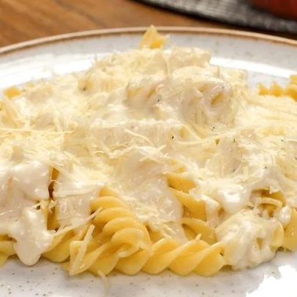

- Tempo
- Porção
- Tipo
- 10 min
- 10
- Doces
Ingredientes
Modo de Preparo
- Coloque no liquidificador o creme de leite (com soro mesmo) e o leite condensado.
- Bata um pouco e depois vá acrescentando o suco do limão, aos poucos.
- Ele vai ficar bem consistente, leve à geladeira.

- Tempo
- Porção
- Tipo
- 90 min
- 6
- Frutos do Mar
Ingredientes
Modo de Preparo
- Retire a tampa e as sementes da moranga.
- Lave e enrole-a em papel alumínio e leve ao forno médio (180° C) por 45 minutos.
- Em uma panela, aqueça o azeite e refogue o alho e a cebola, junte o camarão e deixe cozinhar por 5 minutos.
- Adicione os tomates picados, a pimenta, o sal e o ketchup.
- Desligue o fogo e acrescente o creme de leite e o cheiro-verde.
- Misture bem e adicione por último o requeijão.
- Passe um pouco de requeijão no interior da moranga e despeje o creme de camarão.

- Tempo
- Porção
- Tipo
- 30 min
- 8
- Molho
Ingredientes
Modo de Preparo
- Em uma panela, derreta a margarina e acrescente a cebola, o sal e a pimenta-do-reino.
- Quando a cebola estiver bem transparente, acrescente o creme de leite e misture.
- Dissolva o amido no leite e adicione ao molho.
- Quando o molho estiver com uma consistência firme, desligue o fogo e acrescente o queijo, mexendo bem, para ele não grudar.
- Sirva com macarrão ou arroz de forno.